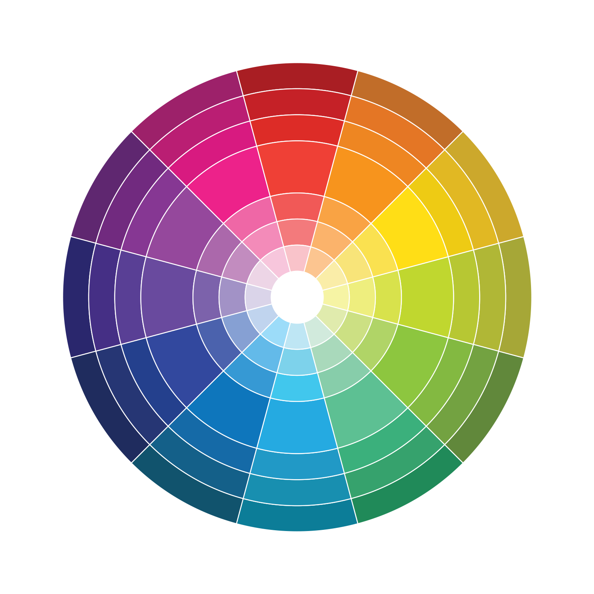

Barvy

- Výběr barvy
Jednobarevné
Trojúhelník
-
Doplňkové
- Možnosti zápisu
- Jméno DarkTurquoise
- Hexa kód #00CED1
- Decimální kód rgb(0,206,209)
Fonty
Sans Serit = bezpatkové písmo
The quick brown fox jumps over the lazy dog.
The quick brown fox jumps over the lazy dog.
The quick brown fox jumps over the lazy dog.
Serif = patkové písmo
The quick brown fox jumps over the lazy dog.
The quick brown fox jumps over the lazy dog.
The quick brown fox jumps over the lazy dog.
Stylování textu
H1: Hlavní nadpis
- Font-weight: 700 (bold)
- Font-size: 26px
- Font-family: Cormorant Garamond
- Font-weight: 500
- Font-size: 18px
- Font-family: Cormorant Garamond
P: Odstavec
- Font-weight: 400 (regular)
- Font-size: 14px
- Font-family: Roboto Slab